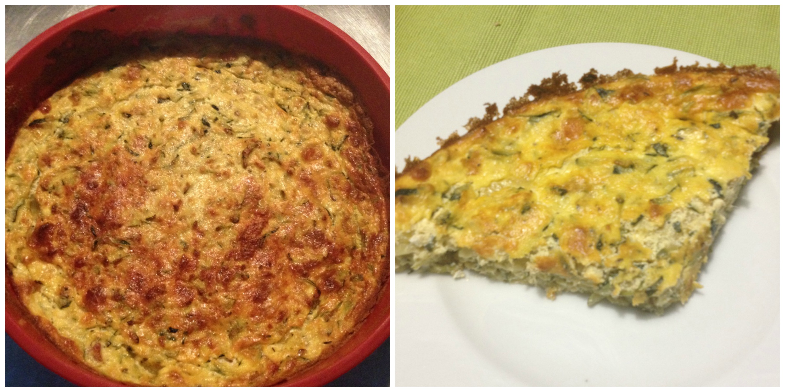
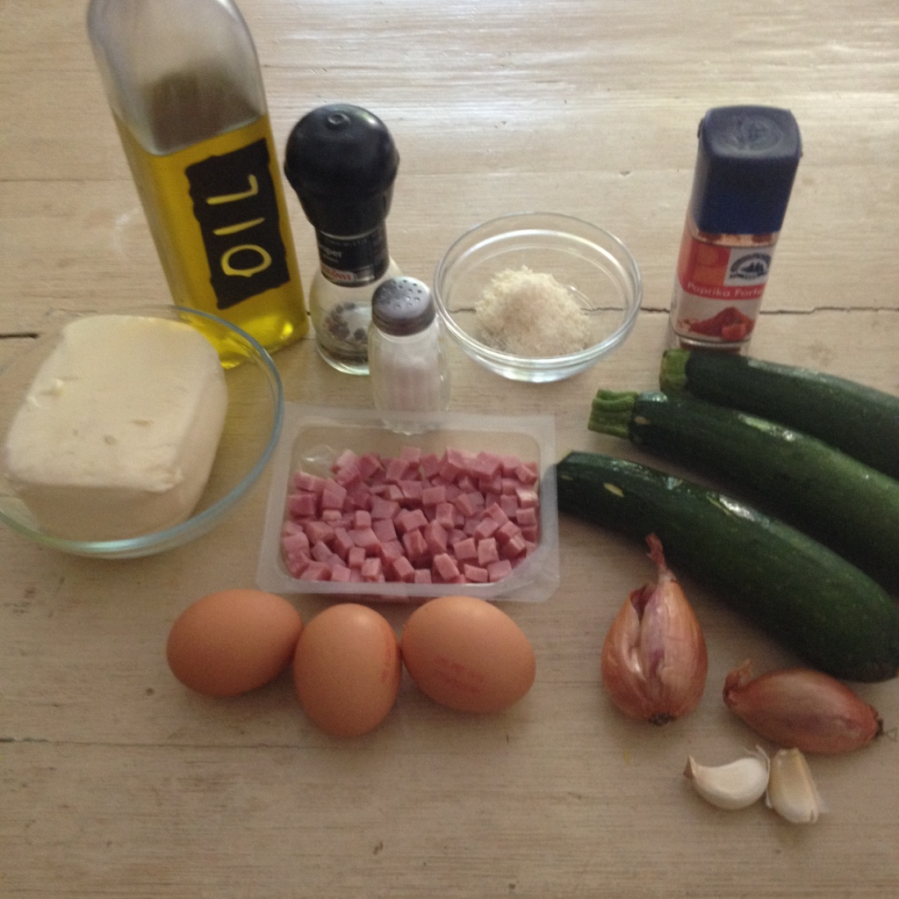
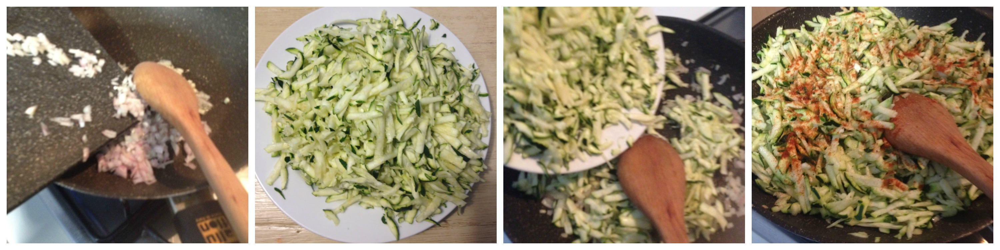
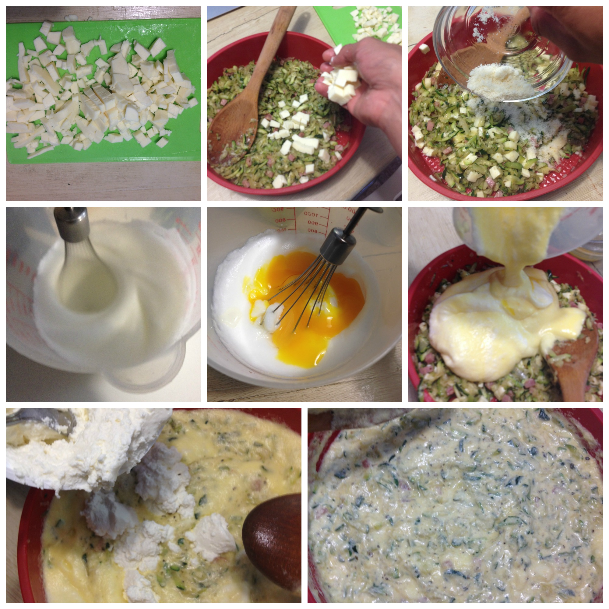

Zucchini quiche (crustless)¶

- Serves: 4
- Type: starter
Background¶
This is an ideal starter for a weekend lunch with friends, it is quite simple to prepare and it is really tasty and light.
Ingredients¶

- 3 medium zucchini
- 200 grams ricotta cheese
- 3 eggs
- 2 diced shallots
- 2 diced garlic cloves
- 50 grams grated parmesan cheese
- 200 grams diced mozzarella
- 100 grams diced prosciutto cotto
- grounded paprika
- salt and paper to taste
- olive oil
Steps¶
Grate the zucchini (use the bigger hole)
Heat a bit of olive oil in a fry pan, sauté the shallots and onions for a few minutes
Add the grated zucchini
Add salt, pepper and grounded paprika and cook for 5 minutes
Drain the extra liquid of the zucchini (you can use a sieve adding some weight on it or you can also use the hands when they will be cold).
Preparing the zucchini
Dice the mozzarella.
Place the drained zucchini in a greased baking tin, add the prosciutto, the mozzarella and the parmesan cheese.
Separate the egg whites to the yolks.
Beat the egg whites until they form stiff peaks. Add salt and the egg yolks. Pour it on the zucchini.
Whisk with a fork the ricotta and add it to the mix.
Stir the mixture and bake to 180°C for 40 minutes.
Serve it tepid
Mixing the ingredients